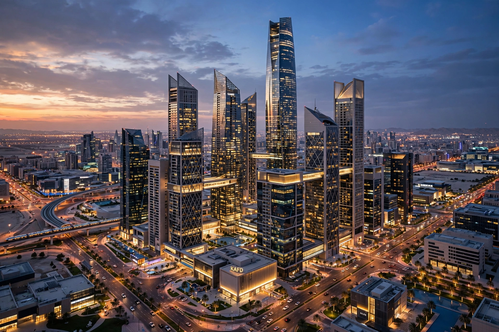

| Native name | صندوق الاستثمارات العامة |
|---|---|
| Type | Sovereign wealth fund |
| Founded | 17 August 1971 |
| Headquarters | Riyadh, Saudi Arabia |
| Key people | Mohammed bin Salman (chairman); Yasir Al-Rumayyan (governor) |
| AUM | Over US$900 billion (2024) |
| Owner | Government of Saudi Arabia |
The Public Investment Fund (PIF; Arabic: صندوق الاستثمارات العامة) is the sovereign wealth fund of Saudi Arabia. Founded in 1971, it is among the largest sovereign wealth funds in the world and serves as the principal investment vehicle for diversifying the Saudi economy away from oil under the Saudi Vision 2030 programme.
The PIF was established by royal decree in 1971 to finance strategic commercial projects inside the kingdom. For most of its early history it operated quietly, holding government stakes in companies such as Saudi Aramco-linked ventures and SABIC. In March 2015 its supervision was transferred from the Ministry of Finance to the Council of Economic and Development Affairs, and in 2016 Crown Prince Mohammed bin Salman, who chairs its board, relaunched it as the engine of Vision 2030.
In October 2017 the fund announced the NEOM megaproject, a planned futuristic city region in the northwest of the country. In 2020 the fund acquired a 67 percent stake in the electric-vehicle maker Lucid Motors' parent and built large positions in global technology and entertainment companies. Through its subsidiary LIV Golf, launched in 2022, the fund became a major and controversial actor in professional golf, and in June 2023 it announced a framework agreement with the PGA Tour. The fund also acquired a controlling stake in the English football club Newcastle United in October 2021.
The fund's portfolio spans domestic "giga-projects" — including NEOM, the Red Sea Project, Qiddiya and Roshn — and international holdings in technology, gaming (including stakes associated with the Savvy Games Group), mining through Ma'aden, and aviation, including the launch of Riyadh Air in 2023. Shares in Saudi Aramco were transferred to the fund and its subsidiaries in stages, bolstering its asset base.
The PIF is chaired by Crown Prince Mohammed bin Salman. Its governor since 2015 is Yasir Al-Rumayyan, who also chairs Saudi Aramco. The fund states a target of reaching US$1 trillion in assets under management and deploying capital into 13 strategic domestic sectors.
Critics have linked the fund's overseas ventures, particularly in sport, to allegations of "sportswashing" intended to improve Saudi Arabia's international image, an accusation the fund and Saudi officials reject.